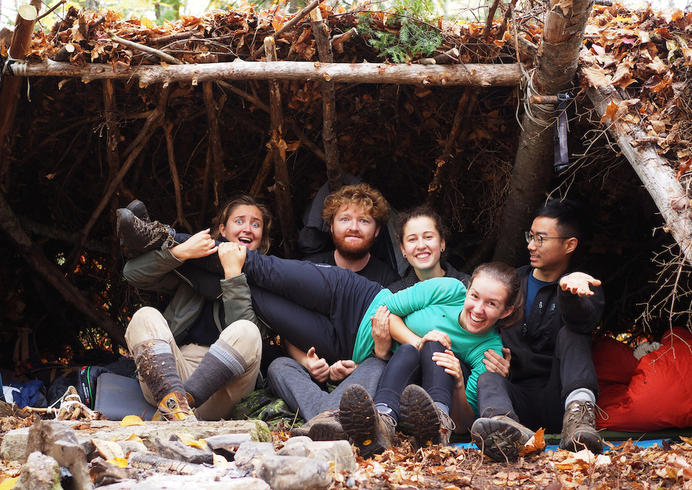
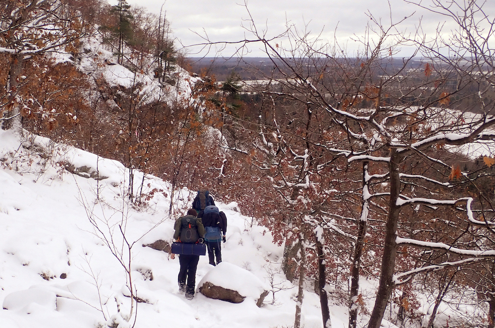
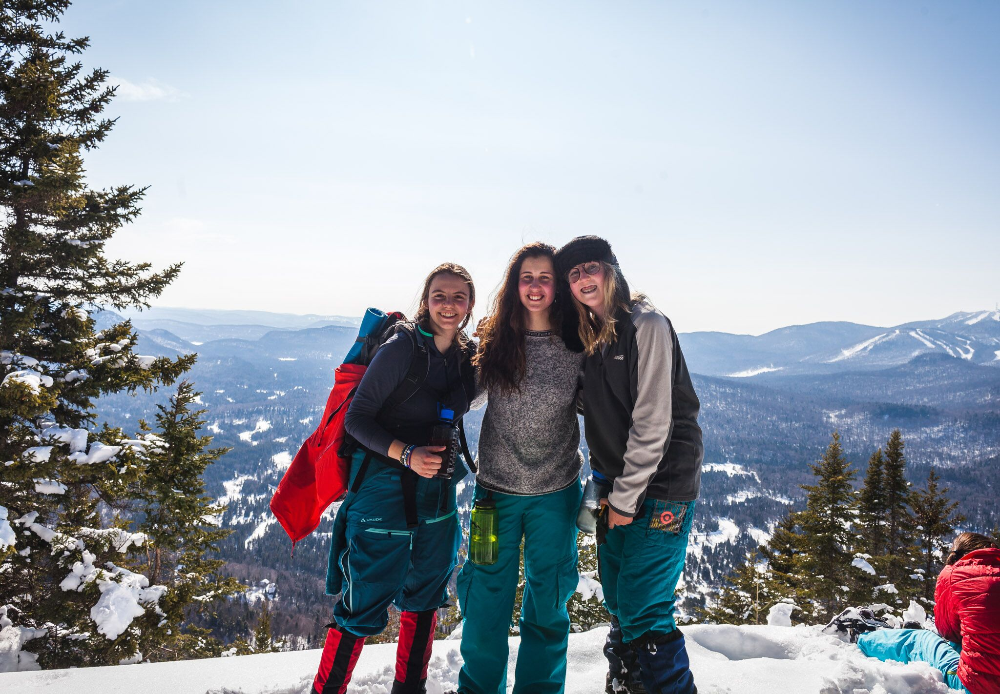

Camping Tips

When it comes to staying warm below freezing temeratures, layering is key. The base layer of clothing consists of a tight fitting and relatively thin shirt to remove moister from the skin. It is generally made of smart wool or synthetic materials which dry quickly but easily become odorous. The second layer is for isolation, and is therefore generally long-sleeved and thick. Layer three is meant for protection against the elements. It should be waterproof and breathable. The fourth - and final - layer is an isolating pouffy for the cold.

Basic Survival Equipment
bushcraft knifefire steel
compass & map (waterproofed)
crucial outdoor clothing
headlamp with spare batters
Second-Line Kit
spare set of clothingcordage
tarp or tent
emergency rations
first-aid kit
Nalgene water bottle
Sustainable Load
shelter: tent or tarpaulincooking pot
stove
sleeping bag & sleeping mat
sanitary items (eg. a Diva Cup)
food stores
boots & lightweight shoes
backpack
water purification tablets
spork
rain gear
toilet paper

Some friends and I recently road-tripped to Gatineau Park in Québec for a 'survival camping' adventure. We arrived late at night and soon thereafter hiked roughly 3 hours up the snowy mountain along a path under a stunning starry night sky. Once at the top, we built an emergency shelter with a tarp and rope, collected wood and got a fire going. The following day, we collected water from a frozen lake and improved our shelter by wind-proofing the sides and strengthening the roof, as well as organizing the firewood, in anticipation of the expected snowfall. The Sunday morning greeted us with a beautiful layer of freshly fallen snow.

Photo credit to William Topa
Remember: leave no trace, cotton kills and never bring glass